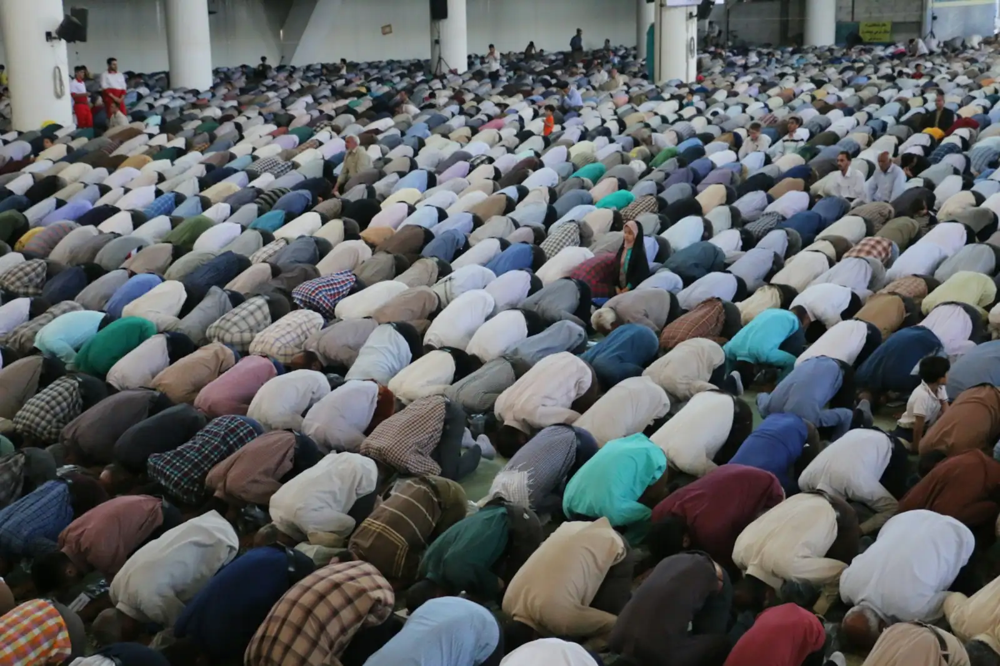

Taraweeh
Taraweeh prayers are held nightly after Isha throughout Ramadan — check announcements for details.

Five daily prayers, three Jumu’ah congregations every Friday, and Eid and Ramadan prayers at 143 Hogans Rd, Hoppers Crossing.
Photo: matin firouzabadi / Unsplash
Every day
The masjid is open for all five congregational prayers, every day of the year.
Visiting for the first time? You are warmly welcome, whether you are Muslim or simply curious about Islam. Volunteers will help you find the prayer hall and the women’s entrance. What to expect →
Friday
Three congregations so everyone can pray — khutbahs delivered in Arabic and English.
Through the year

Come and pray
Join us for salah at 143 Hogans Rd, Hoppers Crossing. If you have any questions before you come, call (03) 8087 0900.